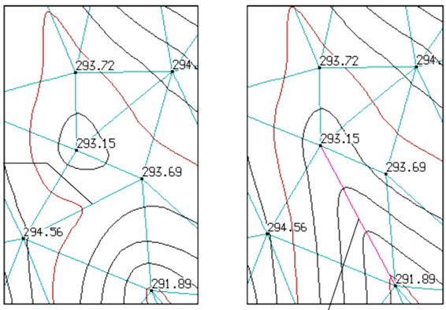

Мавзу: Рақамли нивелир қийматларини дастурий таъминотда қайта ишлаш
Reja.
1. Yer modeli ustidagi tekislikda aniq geometrik elementlar qurish
2. Relefning raqamli modeli va uning elementlari
Yer usti tekisliklarida geometrik elementlar qurishda davlat balandlik tarmoqlarining
ahamiyati katta o`rin tutadi. Balandlik tarmoqlari asosida vaqtinchalik baladlik
tarmoqlarini barpo qilish ish talabi va aniqligidan kelib chiqadi. Agar yo`l trassasini yoki
qishloq xo`jaligi maydonini tekislash yoki hajm ishlari kartogrammasini tuzishda nivelirlash
ishlari talab etilsa albatta hududga vaqtinchalik balandlik tarmog`I o`rnatilishi lozim
bo`ladi.
Relefning raqamli modelini qurishda eng avvalo joylarda dala tadqiqot ishlari olib boriladi.
Elektron taxeometr, 3D lazer skaner va raqamli nivelirlar yordamida tafsilotliy hamda
relefli syomka ishlarini bajarish mumkin bo`ladi.
Tafsilotli syomka: Mazkur syomkada asosan joyning haqiqiy joylashuvi tasvirlanadi va
topografik tadqiqot ishlari olib boriladi.
Relefli syomka: Mazkur syomkada joyning boltiq dendizi balandligiga asoslanib balandlik
nuqtalari aniqlanadi va relef hosil qilinadi.
Relefli modelni yaratish uchun maydon ko`rinishidagi ob`yektlarga elektron taxeometr
geodezik asbobidan foydalanilsa, chiziqli trassa ko`rinishidagi ob`yektlar uchun raqamli
nivelirlarni tavsiya qilish mumkin. Raqamli nivelirda trassa bo`ylab berilgan yelkalardagi
masofalarda pikot oralig`I qiymatlarini tahliliy natijalari xotira diskiga nuqta yoki chiziq
ko`rinishida saqlanadi. Saqlangan ma`lumotlar USB port orqali kompyuterga ulanadi va
ma`lumotlar yuklab olinadi. Yuklab olingan chiziq yoki nuqta ko`rinishidagi ma`lumotlar
Credo DAT dasturida qayta ishlanadi.
X, Y, Z qiymatlariga ega bo`lgan ma`lumotlar Credo DAT dasturiga yuklab olingach nuqtalar
fazoviy joylashadi berilgan bo`yruqlar asosida nuqtalar birlashib profil hosil bo`ladi.
Loyiha chiziqlarini, yer baladligi bilan loyiha balandligi orasidagi hajm ishlarini aniqlash
imkonini beradi.

Shunday qilib, DEM uchastkaning butun yuzasi, bir yoki bir necha mikrosxemalar shaklida
bo'ladi. Bu sizga gorizontal chegaralari o`zgartirish yoki kesik, siniq shakllarini ajratish
imkonini beradi.
Madonli qatlam K1
Maydon bo`linganda K2
Maydonlar kesishganda K1 и K2
Vaziyatdan kelib chiqib (CMS) raqamli model turli topografik ma'lumotlarni ko'rsatadi:
rejasi,
ramz majmui
Shartli belgilari
vaziyat elementlari
sistemasi?
Relefli model
CHIZIQLI INSHOOTLARNI LOYIHALASH
Chiziqli inshoot trassasini loyihalashda belgilangan oraliq masofa, egri boshi va egri
oxiri, piketlarning oraliq masofalari hamda profillar avtomatik tarzida hisoblanadi va
vizuallashtiriladi.
Bo`ylama profillarni tuzishda har bir
elementlardan kelib chiqib yer baladligi
masshtabga ko`ra balandlik shkalasini hosil qiladi. Hosil bo`lgan shkaladan balandligi
bo`yicha nuqtalan belgilanadi va birlashtirilib sirt yoki yer baladligi sirti namoyon
bo`ladi. Loyiha baladligini o`tkazish orqali hajm ishlari kartogrammasi hisobotini olish
mumkin bo`ladi.